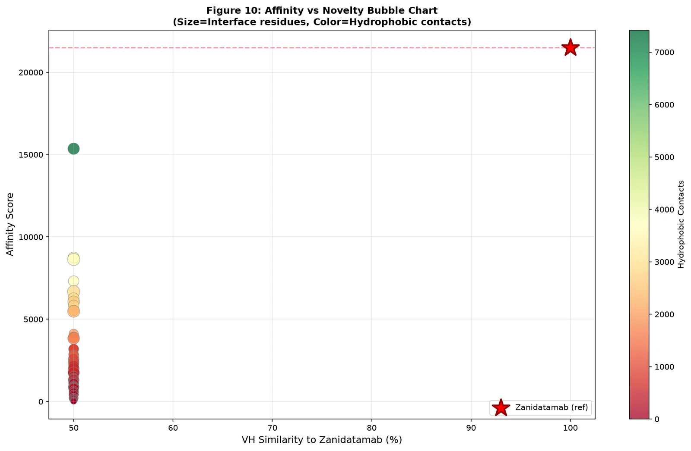

Case study · Computational antibody design
A better antibody, one interface at a time.
An antigen-guided design campaign that turns 20 RFdiffusion backbones into 80 ranked heavy/light-chain candidates — and makes the next experiment obvious.

The brief
The goal was not to generate the most antibodies. It was to build a repeatable way to move from an antigen context to a small, inspectable set of designs — then to be explicit about which candidates deserve bench time.
The campaign starts with 20 backbone designs, generates 80 heavy/light-chain sequence candidates, predicts each structure with RF2, and scores the resulting interfaces. The output is a ranked table, a set of PDB models, and a short list for experimental follow-up.
“A design pipeline is only useful if it ends with a decision someone can defend.”
How the campaign worked
01 · Define the input context
The run began with an antigen/reference context and a design objective. The input names and reference labels come from the project's test case; they are preserved in the public artifacts rather than cleaned up after the fact.
02 · Generate backbones
RFdiffusion produced 20 backbone designs from the structural design stage. These define the geometry that the sequence-design step has to satisfy.
03 · Design sequences
ProteinMPNN generated heavy- and light-chain sequences for each backbone, yielding 80 final candidates and 160 chain records. Sequence diversity was tracked rather than collapsed into a single consensus.
04 · Predict, score, rank
RF2 predicted 80 final PDB models. For each model, I counted hydrophobic contacts, hydrogen bonds, salt bridges, and interface residues, then combined those signals into a composite score and a small number of tiers.
What came out
- Final candidates
- 8020 backbones × 4 sequence designs
- Heavy + light chains
- 160Two chain records per candidate
- Top composite score
- 15,360.5Arbitrary units; not a measured Kd
- Top interface residues
- 71Residues at the designed interface
- Top hydrophobic contacts
- 7,424Lead candidate
- Tier 1 candidates
- 5Prioritized for closer inspection
The top candidate, samples_design_4_dldesign_3_best, has a composite interface score of 15,360.5, with 7,424 hydrophobic contacts, 146 hydrogen bonds, 258 salt bridges, and 71 interface residues. The next candidate scores 8,746.5 — a pronounced lead, but one that needs structural inspection before it means anything.

The distribution matters as much as the top hit. The median composite score is 1,103.5 and the mean is 1,987.6, so the batch has a long tail: five Tier 1 designs, ten Tier 2, fifteen Tier 3, and fifty below the prioritization cutoff. That shape is useful for triage; it is not evidence that any one design binds.
What the ranking can — and cannot — tell you
The composite score is a heuristic. It rewards interface contacts, so a larger or more hydrophobic interface can score well without being a good antibody. It does not measure affinity, expression, stability, aggregation, immunogenicity, or manufacturability.
The structural models are predictions. There is no experimental validation in this project: no expression, no binding assay, no cell-based activity, and no safety assessment. The correct reading is “these are the models and candidates I would inspect first,” not “this antibody works.”
What I would do next
- Visually inspect the top 5–10 PDB models for interface geometry, CDR orientation, and obvious clashes.
- Check sequence liabilities and developability flags before committing to synthesis.
- Select 3–5 non-redundant candidates, plus the parental/reference control, for expression.
- Measure binding with SPR, BLI, or ELISA; use negative controls and run replicates.
- Only then decide whether to optimize affinity, stability, or both.